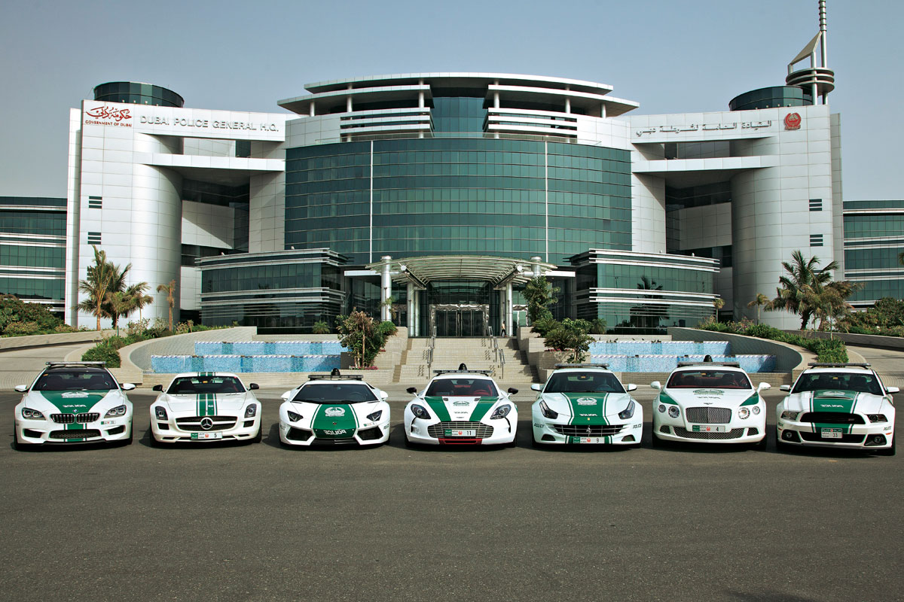

Innovent deployed Innfini as the central digital-transformation platform for Dubai Police — integrating 20+ internal Dubai-Police systems into one unified operating fabric and powering services within the new intelligent smart police stations.

Innovent deployed Innfini as the central digital-transformation platform for Dubai Police — integrating 20+ internal Dubai-Police systems into one unified operating fabric, and powering services within the new intelligent smart police stations.
Complete weapon lifecycle from issuance and field deployment to receiving, inspection and storage.
Passive UHF and specialized weapon tagging across storage facilities, issuance points and checkpoints.
Compliance enforcement, unauthorized-movement alerts and strict chain-of-custody through configurable rules.
Role-based access control and immutable audit trails embedded for security and governance across every service.
Selected platform services power the new intelligent smart police stations being deployed across Dubai.
Real-time operational dashboards and audit-ready reporting for operations and leadership across the force.
Twenty-plus internal Dubai Police systems unified into one operational fabric — and the foundation of every smart police station rolling out across Dubai.
Our solutions team will walk your environment, your systems, and your operators' day — and show what an Innfini deployment looks like in your context.